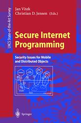

|  |
Vitek, J., Purdue University, IN, USA Jensen, C.D., O'Reilly Institute, Dublin, Ireland (Eds.) Springer Verlag, Lecture Notes in Computer Science.VOL. 1603 |
| Introduction | ||
| Part I: Foundations | ||
| Trust: Benefits, Models, and Mechanisms | Vipin Swarup and Javier Thayer Fabrega | 3 |
| Protection in Programming--Language Translations | Martin Abadi | 19 |
| Reflective Authorisation Systems: Possibilities, Benefits, and Drawbacks | Massimo Ancona, Walter Cazzola, and Eduardo B. Fernandez | 35 |
| Abstractions for Mobile Computations | Luca Cardelli | 51 |
| Type--Safe Execution of Mobile agents in Anonymous Networks | Matthew Hennesy and James Riely | 95 |
| Types as Specifications of Access Policies | Rocco De Nicola, GianLuigi Ferrari, and Rosario Pugliese | 117 |
| Security Properties of Typed Applets | Xavier Leroy and François Rouaix | 147 |
| Part II: Concepts | ||
| The Role of Trust Management in Distributed Systems Security | Matt Blaze, Joan Feigenbaum, John Ioannidis, and Angelos D. Keromytis | 185 |
| Distributed Access--Rights Management with Delegation Certificates | Tuomas Aura | 213 |
| A View--Based Access Control Model for CORBA | Gerald Brose | 239 |
| Apoptosis --- the Programmed Death of Distributed Services | Christian Tschudin | 255 |
| A Sanctuary for Mobile Agents | Bennet S. Yee | 263 |
| Mutual Protection of Co-operating Agents | Volker Roth | 277 |
| Part III: Implementations | ||
| Access Control in Configurable Systems | Trent Jaeger | 291 |
| Providing Policy--Neutral and Transparent Access Control in Extensible Systems | Robert Grimm and Brian N. Bershad | 319 |
| Interposition Agents: Transparently Interposing User Code at the System Interface | Michael B. Jones | 341 |
| J--Kernel: a Capability--Based Operating System for Java | Thorsten von Eicken, Chi--Chao Chang, Grzegorz Czajkowski, Chris Hawblitzel, Deyu Hu, and Dan Spoonhower | 371 |
| Secure Network Objects | Leendert van Doorn, Martin Abadi, Mike Burrows, and Edward Wobber | 397 |
| History--based Access Control for Mobile Code | Guy Edjlali, Anurag Acharya, and Vipin Chaudhary | 415 |
| Security in Active Networks | D. Scott Alexander, William A. Arbaugh, Angelos D. Keromytis, and Jonathan M. Smith | 435 |
| Using Interfaces to Specify Access Rights | J. Hulaas, A. Villazon, and J. Harms | 455 |
| Introducing Trusted Third Parties to the Mobile Agent Paradigm | Uwe G. Wilhelm, Sebastian Staamann, and Levente Buttyan | 471 |
| Appendix | ||
| List of Authors | 495 | |
Keywords: Internet Programming, Security, Open Systems, Java Programming, Mobile Agents